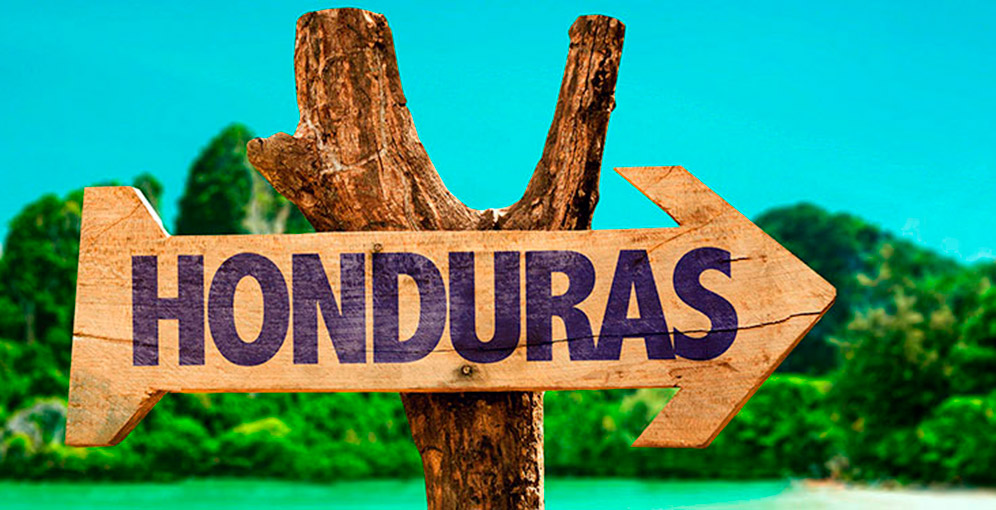
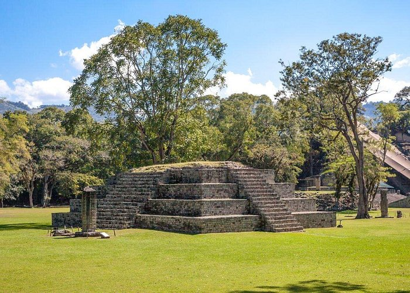
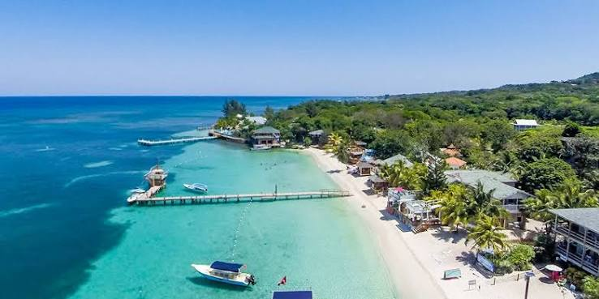
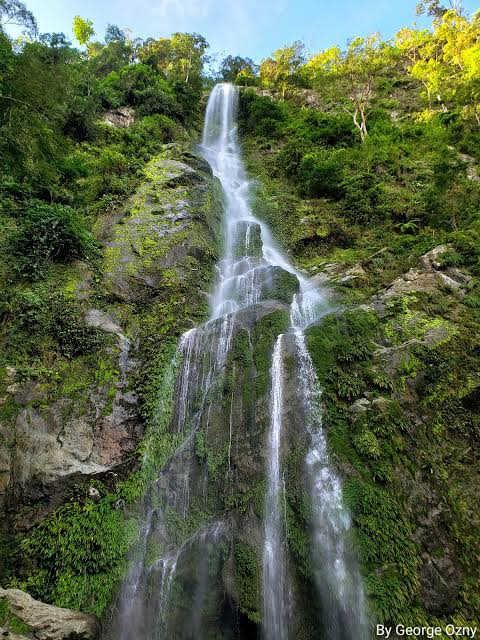

"Honduras: Cuna de historia milenaria, biodiversidad increible y calidez humana."
Conoce los tesoros naturales y arqueológicos más representativos de nuestro territorio.

Legado monumental de la civilización maya, famoso por sus complejidades jeroglíficas y estelas artísticas en el occidente del país.

Parte del Sistema Arrecifal Mesoamericano, ideal para el buceo autónomo, playas de arena blanca y aguas cristalinas.

Impresionante refugio de bosques nublados, cascadas caudalosas y una biodiversidad endémica inigualable en el litoral caribeño.
Honduras alberga más del 70% de las especies de mamíferos y aves de Centroamérica, protegidas en decenas de reservas biológicas y parques nacionales.
Clima tropical con variaciones según la altitud en los bosques nublados. Moneda oficial de curso legal: el Lempira (HNL).
Situada en el corazón del istmo centroamericano, con costas bañadas por el Mar Caribe al norte y acceso al Golfo de Fonseca en el Pacífico.